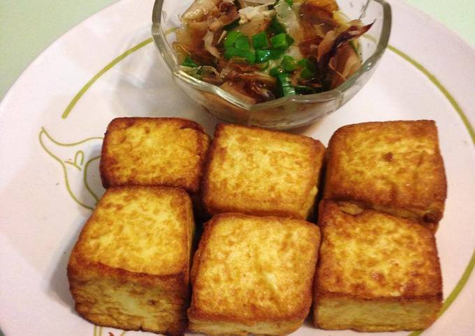
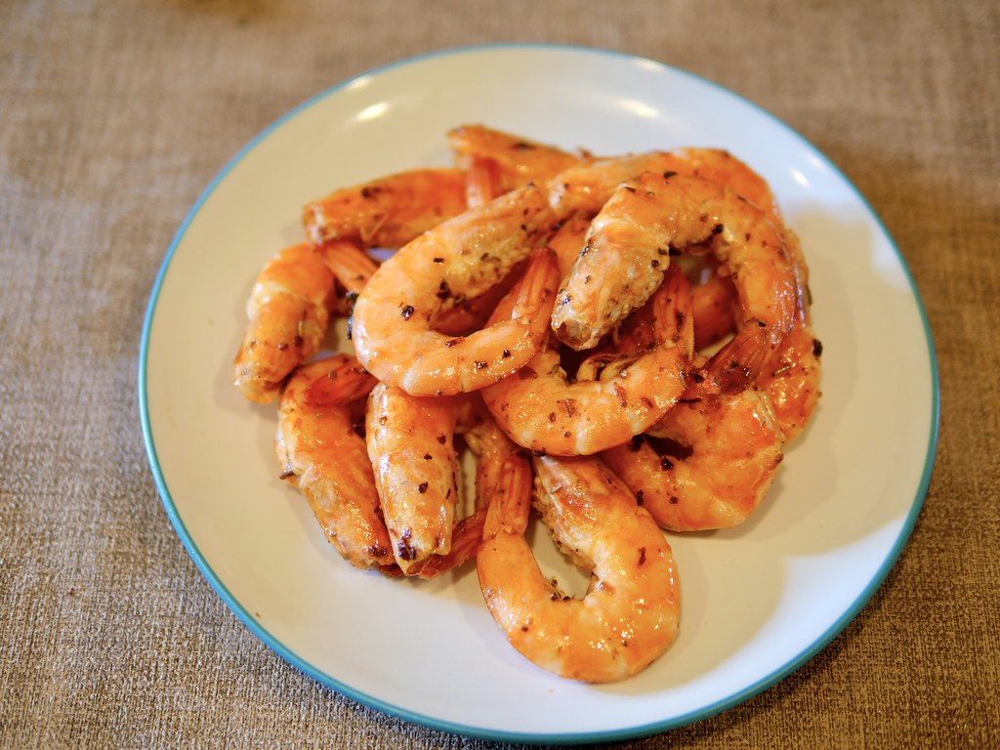
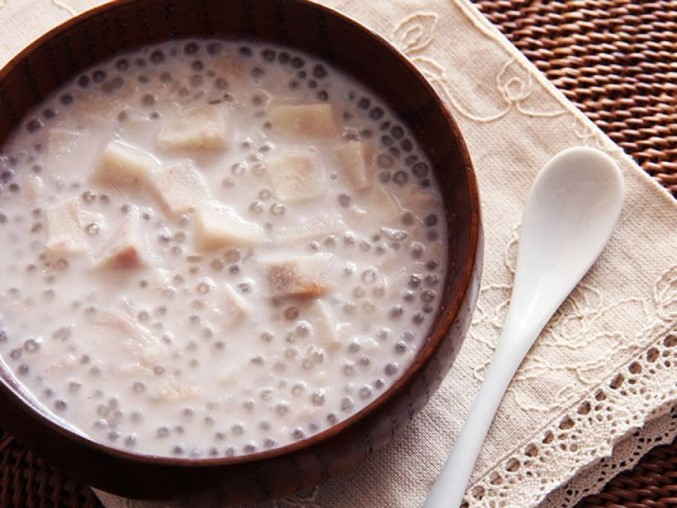

<！DOCTYPE html>
<html>
<head>
<title>文字+圖片操作</title>
</head>
<body bgcolor="3DFFFF">
<h1 align="center">文字+圖片操作 學號91034121 姓名:朱哲輝</h1>
<table border ="0px">
<tr>
<td></td>
<td></td>
<td></td>
<td></td>
</tr>
<tr>
<td align="center"><a href="index.html">老皮嫩豆腐</a></td>
<td align="center"><a href="2dex.html">胡椒蝦</a></td>
<td align="center"><a href="3dex.html">芋頭西米露</a></td>
<td align="center"><a href="4dex.html">糖醋排骨</a></td>
</tr>
</table>
<h2>胡椒蝦</h2>
食材
<table border ="2px">
<tr>
<th>食材</th>
<td>泰國蝦1斤</td>
<td>鹽少許</td>
<table border ="2px">
<td>胡椒粉170g</td>
<td>肉桂粉110g</td>
<table border ="2px">
<td>辣椒粉70g</td>
<td>米酒80g</td>
</tr>
</table>
<h3>做法<h3>
<ol>
<li>將胡椒粉、辣椒粉、肉桂粉。</li>
<li>鹽、酒放入鼎中攪拌，加入蝦子，加熱沸騰後。</li>
<li>攪拌均勻瀝乾、刮渣，關小火烘乾即可。</li>

</ol>


</body>
</html>
